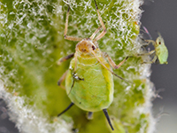
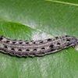

Pest Control Strategies
Common Pests and Diseases

Aphids
Small sap-sucking insects that can quickly multiply and damage crops.

Powdery Mildew
Fungal disease that appears as a white powdery coating on leaves.

Cutworms
Larvae of various moth species that cut down young plants at soil level.
Integrated Pest Management (IPM) Strategies
IPM Approach
Integrated Pest Management is a sustainable approach that focuses on long-term prevention of pests through a combination of techniques:
- Biological control
- Habitat manipulation
- Cultural practices
- Resistant varieties
Monitoring and Early Detection
Regular Inspections
- Conduct weekly visual inspections of crops
- Use magnifying glasses for detailed examination
- Keep records of observations
Pest Traps and Monitoring Tools
- Install pheromone traps for specific pests
- Use sticky traps to monitor flying insects
- Employ weather stations to predict disease outbreaks
Effective Treatment Strategies
Treatment Hierarchy
- Cultural controls (crop rotation, sanitation)
- Mechanical controls (handpicking, trapping)
- Biological controls (beneficial insects, microbial products)
- Chemical controls (as a last resort, using the least toxic options)
Important Note
Always follow local regulations and guidelines when applying any pest control measures. Consult with agricultural experts for personalized advice.
Resources
Pest Identification Tools
- Online pest databases
- Mobile apps for quick identification
- Local extension office services
Further Reading
- IPM handbooks and guides
- Research papers on pest management
- Agricultural extension publications